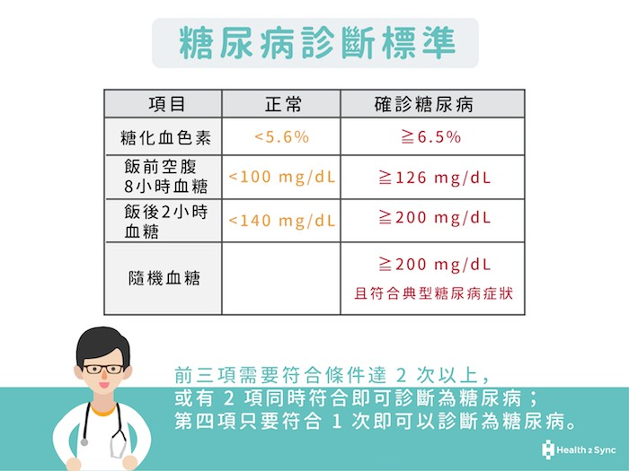

糖尿病
科普
甚麼是糖尿病，簡單來說，糖尿病就是血糖失衡的表現。
血糖指的是血液中的葡萄糖，正常的波動範圍，
大約落在 70 – 140mg/dL 之間，最多不會超過 200mg/dL。
所以當空腹血糖 ≥ 126mg/dL 或是隨機血糖 ≥ 200mg/dL，就表示罹患糖尿病了。
糖尿病後的常見症狀：
1.吃多、喝多但體重卻減輕。
2.排尿次數增加及量多。
3.異常的口渴。
4.精神狀況不佳，經常嗜睡。
5.傷口不易癒合。
5.泌尿道反覆感染。
一般來說，糖尿病的診斷標準有 4 項：
1.糖化血色素 ≥ 6.5% 。
2.空腹 8 小時血糖 ≥ 126mg/dL
3.口服葡萄糖耐受試驗 2 小時血糖 ≥ 200mg/dL
4.有明顯三多一少症狀 (吃多、喝多、尿多、體重減輕) 且隨機血糖 ≥ 200mg/dL
5.前 3 項需要符合條件達 2 次以上 (含)，或是第 4 項只要符合 1 次，就可診斷為糖尿病。

糖尿病的分類:
1. 第 1 型糖尿病：發生於青少年，與自體免疫有關，因為胰臟貝他細胞遭破壞導致胰島素絕對性的缺乏，
因此，第 1 型糖尿病人者，需終身注射胰島素控制血糖。
2.第 2 型糖尿病：大多發生於中老年人，有明顯家族遺傳史。
3.其它型糖尿病：胰臟外分泌疾病(胰臟炎、胰臟切除、腫瘤、囊性纖維化)、內分泌疾病(如：甲狀腺亢進)、
β細胞功能或胰島素作用的基因缺陷、藥物或化學試劑所誘發、感染、罕見的免疫性疾病、其它遺傳性症候群相關的糖尿病。
4.妊娠性糖尿病。
資料來源：智抗糖部落格、宏恩醫院